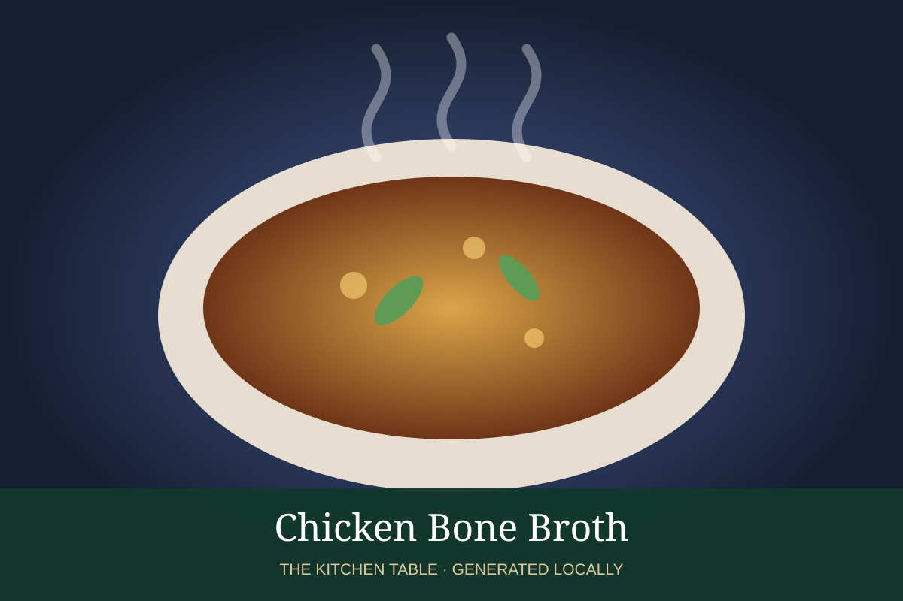

← Back to all recipes
BROTH & STOCK · POULTRY
Chicken Bone Broth
Gelatin-rich chicken bone broth from carcasses, feet, wings, and aromatics.
Broth & StockPoultry

Ingredients
- 4 lb chicken carcasses, wings, and/or feet
- 1 onion
- 2 carrots
- 2 celery ribs
- 1 tbsp cider vinegar
- 4 qt water
Preparation
- Roast bones for deeper flavor, if desired.
- Combine with vegetables, vinegar, and water.
- Barely simmer 6–8 hours.
- Strain and chill rapidly.